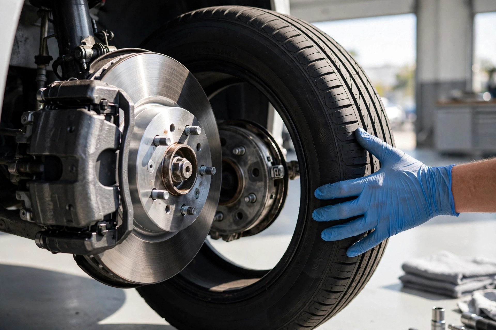

Diagnostic & réparation mécanique
Diagnostic électronique complet et réparations mécanique générale pour toutes marques.
Montréal, Québec · Mécanique générale de confiance
Diagnostic, entretien et réparations honnêtes à prix raisonnables. Note de 4,6/5 sur Google (165 avis).
Nos services
Diagnostic électronique complet et réparations mécanique générale pour toutes marques.
Vidange d'huile, filtres, liquides et mises au point pour garder votre auto en forme.
Plaquettes, disques, amortisseurs et direction — pour une conduite sécuritaire.
Pose, rotation et équilibrage — pneus d'été et d'hiver en saison.
Inspection complète avant l'achat d'un véhicule usagé — achetez en confiance.
Batterie, alternateur, démarreur et système électrique — fini les pannes surprises.
Pourquoi nous choisir
Depuis des années, le Centre d'Auto Ontario sert les automobilistes de Sainte-Marie avec une approche simple : un diagnostic clair, un devis expliqué à l'avance, et un travail bien fait.
En images

Ils en parlent
Bon à savoir
Lundi au vendredi de 8 h à 17 h 30. Fermé le samedi et le dimanche.
Oui — nous faisons l'entretien et la réparation mécanique générale de toutes les marques.
Toujours. Chaque réparation est expliquée et approuvée avant que le travail commence — pas de surprise.
Au 2259, rue Ontario Est, à Montréal (QC H2K 1V9), dans le quartier Sainte-Marie.
Contactez-nous